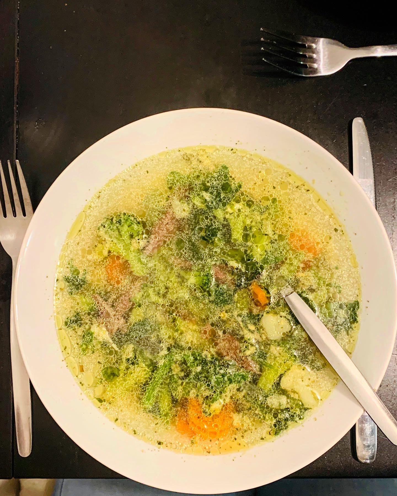

Hovädzia polievka podľa @ruzicka_ketova — Normy Jedál
Hovadzia polievka 🍲 .
Dolezitou sucastou prezitia abstaku od cukru a doplnenia mineralov 🤗
.
🥣Hovadzi polievkova zmes 500g
🥣Mrazena zeleninova zmes z kargiolu, brokolice a mrkvy 500g
🥣2 vajcia
🥣kurkuma, himalajska sol, korenie, petrzlenova vnat
.
Povarime maso okolo 2h pridame celu cibulu, stopku karfiolu (ak mame odlozenu).. Ked je maso uvarene do makka, vyberieme ho a do vodu dame zeleninu, bylinky, koreniny aj rozbijeme dve vajcia a hned miesame polievku metlickou na slahanie aby sa vytvorili “rezanceky”. Po 5min odstavime polievku aj mozeme podavat 🍲🤤
.
Neodmyslitelnou sucastou nedelneho obeda 🍽
.
#beefsoup #ketorecipes #ketomeals #ketoobed #hovadziapolievka #nedelnyobed #sundaylunch